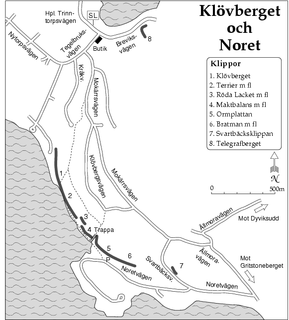

GPS: 59.21373009941309,18.350257873535156
Klövberget ligger på Tyresös sydvästra sida och bildar en ca 1km lång bergssida som till stora delar går rakt ned i Kalvfjärden. På Klövberget finns några av Stockholms mest klassiska tradlinjer. Räcker inte det så ligger
norets
alla väggar strax söderut.
Det som i klättersammanhang menas med Klövberget är huvudsakligen dess allra nordligaste del. Detta parti som delvis går ned i fjärden, delvis har fast mark under sig är ca 300 m långt och 10–30 m högt. Klippan karakteriseras av några bastanta taköverhäng som gör klippan lätt att känna igen. Tv minskar taken i omfång och en markant fristående pinnakel tjänar här som riktmärke. Th om överhängen finns ett tämligen långt klipparti som går rakt ned i vattnet. Denna del av klippan är ganska lös och vegeterad och ännu så finns endast ett par leder gjorda på denna del av berget. På den del av berget som har fast mark under sig är klippan av god kvalitet och det mesta av lös klippa har rensats bort. På de leder där det ännu finns löst material anges detta i ledbeskrivningen. De flesta lederna här ligger i mellanregistret (grad 5-6) och uppfattas nog som tämligen seriösa för sin grad. Flera av lederna är att betrakta som riktiga klassiker som absolut måste göras av dem som vill pricka av Stockholms pärlor.
OBS!
Klippartiet tv om Skamvrån ligger på tomtmark och ägaren är en aktiv motståndare till all klättring på berget. Detta innebär att tills vidare är lederna 1-4 att betrakta som förbjudna och skall undvikas. Resten av väggen ligger dock utanför tomten och det finns ingen anledning att låta bli att klättra här. Oavsett vad som har målats på stenarna så är allt på själva huvudväggen utanför tomten. Tidigare var det också en del som tog sig fram till klippan genom att gå över tomten (med den gamle ägarens goda minne). Detta är nu definitivt inte att rekommendera och kan bara försämra alla möjligheter att få klättra här i lugn och ro.
Enda sättet att ta sig fram till klippan är från ovan. Detta innebär naturligtvis att det kan vara svårt att hitta rätt första gången man besöker klippan. Följande beskrivning (se även områdesskissen) skall förhoppningsvis underlätta: Från Tegelbruksvägen tar man Mokärrsvägen upp för en brant backe. Efter ca 500 m svänger vägen svagt åt v medan en stig fortsätter rakt fram. Här kan man parkera. Följ stigen ca 100 m och vik sedan av på en liten stig som går upp på berget. Man passerar nära en vändplan. Vid denna viker man av åt v och går nu söderut, uppe på berget med de branta partierna och Kalvfjärden th om sig. Gör nu inte misstaget att vika av för tidigt åt h utan fortsätt 400–500 m rakt fram innan du viker av ner mot klippkanten. Ett bra riktmärke är den lilla holmen på andra sidan fjärden. Klippan ligger mitt emot denna. Om du finner en yvig tall med en koja under ett par meter ifrån kanten har du kommit rätt. Man kan nu antingen fira sig ner eller följa den exponerade men lätta nedstigningsrampen som går ner 10–15 m th (vänd utåt) om tallen. Starten på denna är dock rätt svår att hitta. Denna nedstigning slutar vid Skamvrån.
Det låga klippartiet längst tv med en tydlig pinnakel, Pricken, som främsta kännetecken. Led 1-4 skall som nämnts ovan undvikas tills vidare.
Själva huvudväggen inleds med en tydlig V-formad dieder, Skamvrån. Th om denna finns en bred pelare med några fina leder.
Kategori:Saknar kolumner
Kategori:Sport Kategori:Trad Kategori:Stockholm Kategori:Tyresö
Copyright (C) Permission is granted to copy, distribute and/or modify this document under the terms of the GNU Free Documentation License, Version 1.3